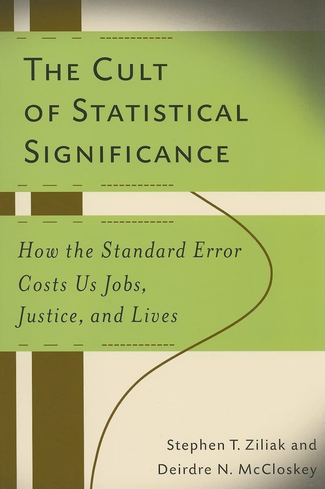
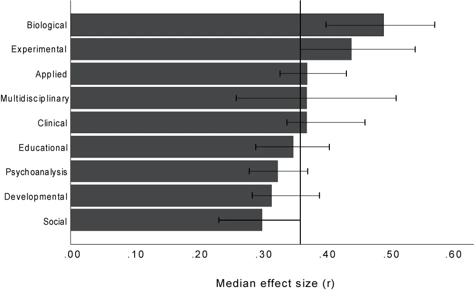

Workshops · Methoden · Werkzeuge für eine bessere Forschungspraxis
Alles, was heute kommt, steht dauerhaft online.
https://hannesdiemerling.github.io/Frequent-Reformation/
kostenfrei
ohne Anmeldung
im Browser
Der QR oben rechts wandert mit. Er zeigt immer dorthin, wo du das Gezeigte nachliest.
Der Hub, Startseite
Mitmachen, anonym
Eine Studie berichtet p = 0,01. Sieben Aussagen. Welche davon kannst du ableiten? Abstimmung per QR, niemand sieht deine Antwort.
Sie vergleichen in einem Experiment Mittelwerte zwischen Experimental- und Kontrollgruppe (je 20 Versuchspersonen). Zweiseitiges Testen der Nullhypothese liefert t = 2,7, damit p = 0,01. Welche der folgenden Aussagen können Sie aus diesem p-Wert ableiten?
Anonym abstimmen
Mindestens eine falsche Lesart. Auch bei denen, die es lehren.
Anteil mit mindestens einer Fehlinterpretation bei sechs dieser Aussagen. Haller & Krauss (2002), bis heute mehrfach repliziert.
Der p-Wert ist die Wahrscheinlichkeit, ein mindestens so extremes Ergebnis zu sehen, wenn die Nullhypothese wahr wäre und alle Modellannahmen zutreffen.
Wenn es regnet, werde ich nass.
ist nicht dasselbe wie
Wenn ich nass bin, regnet es.
Eine Eigenschaft der Daten unter einer Annahme. Nicht eine Eigenschaft der Hypothese.
Genau das sind die sieben Fragen, die wir eigentlich stellen wollen.
61 % Falsch-positiv-Rate, wenn übliche fragwürdige Forschungspraktiken (QRPs) zusammenkommen. Simmons et al. (2011)
~ 90 % der Forschenden interpretieren mindestens eine Aussage zum p-Wert falsch. Haller & Krauss (2002)
.05 eine willkürliche Schwelle, die zur Trennung von wahr und falsch geworden ist.
2015 verzichtet Basic and Applied Social Psychology als erstes Journal vollständig auf p-Werte.
The earth is round (p < .05).
Jacob Cohen, 1994
Simmons et al. (2011): aus nominal 5 % werden bis zu 61 % falsch-positive Befunde.

The Cult of Statistical Significance: How the Standard Error Costs Us Jobs, Justice, and Lives.
Ziliak und McCloskey, 2008
… too often I suspect we waste a deal of time, we grasp the shadow and lose the substance, we weaken our capacity to interpret the data and to take reasonable decisions whatever the value of P. And far too often we deduce ‘no difference’ from ‘no significant difference’.
Austin Bradford Hill, 1965
… one of the worst things that ever happened in the history of psychology.
Paul Meehl über den Signifikanztest, 1978
Kleine Auswahl aus einer langen Liste.
Für dich allein, niemand fragt nach
Welche dieser Praktiken kennst du aus eigener Arbeit, aus einem Projekt oder aus einem Gutachten? Zähl still mit.
Die Wende
Bessere Alternativen gibt es seit Jahrzehnten. Ausgereift, gut beschrieben, in moderner Software einen Klick entfernt.
Was fehlt, ist die Anwendung.
Frage 01
Effekte und Effektgrößen.
Frage 02
Stichprobe: Qualität vor Größe.
Frage 03
Bayesianische Datenanalyse.
Fast jede Studie stellt eine dieser drei Fragen. Der Signifikanztest beantwortet keine davon vollständig.
4,2 Punkte Unstandardisiert, in der Einheit der Sache: die Therapie senkt den Depressionswert (BDI-II) um 4,2 Punkte. Die Praxis versteht das sofort.
d = 0.42 Standardisiert, immer mit Intervall: 95-%-Intervall [0.18, 0.66]. Vergleichbar über Studien und Skalen hinweg.
The primary product of a research inquiry is one or more measures of effect size, not p values.
Jacob Cohen, 1990
Cohen 1988 für r: klein .10 · mittel .30 · groß .50. Von Cohen selbst als Notlösung gedacht, falls ein Feld keine eigenen Vergleichswerte hat.

Domänenwissen schlägt Faustregel. r = .30 ist in der Sozialpsychologie typisch, in der biologischen Psychologie klein.
Median der publizierten Effektstärken (r) je Teildisziplin, Linie: Gesamtmedian. Schäfer & Schwarz (2019), Frontiers in Psychology.
Vierfache Fälle, halber Fehler. Aber mehr Fälle heilen keine Verzerrung: sie machen den falschen Wert nur präziser.
Weg 01, verbreitet
Wie viele, damit p mit 80 % signifikant wird, falls d = 0.5?
Weg 02, empfohlen
Wie viele, damit mein Intervall schmaler als ± 0.15 wird?
Weg 03, bayesianisch
Wie viele, damit der Bayes-Faktor mindestens 10 wird, falls der Effekt existiert?
Obviously the important thing in such is to have a low real error, not to have a “significant” result at a particular station. The latter seems to me to be nearly valueless in itself.
William Sealy Gosset („Student”), 1937, an Egon Pearson
Weg 02 als Werkzeug
Eingabe
Gewünschte Breite des Intervalls und erwartete Streuung. Keinen Effekt raten.
Ausgabe
Wie viele Fälle es braucht, damit die Schätzung so genau wird. Mit Grafik.
Zugang
Kein Konto, keine Installation. Python läuft direkt auf deinem Gerät.
Diemerling & Schäfer, HMU Erfurt. Lehrbuch dazu: Schäfer (2026), Forschungsmethoden, Datenanalyse und Statistik, Springer.
Mindeststichproben-Rechner
Eingeben, wie genau. Ablesen, wie viele. Präzisionsbasierte Planung der Mindeststichprobe, im Browser, ohne Konto.
https://stichprobenrechner.app/
Klick auf die Adresse öffnet den Rechner in einem neuen Fenster.
Rechner öffnen
Was glaube ich über die Welt, und wie ändert sich das, sobald neue Daten eintreffen?
SmartRail: der Hersteller verspricht 8 Minuten Ersparnis, fünf Testfahrten zeigen 6. Der Posterior liegt dazwischen, und man sieht, warum.
Konfidenzintervall: „Mit 95 % Wahrscheinlichkeit liegt der wahre Wert darin.” Falsch. Es beschreibt die Trefferquote des Verfahrens, nicht diesen einen Wert.
Glaubwürdigkeitsintervall: derselbe Satz, und hier stimmt er. Oder direkt: „Mit 87 % Wahrscheinlichkeit ist der Effekt mindestens d = 0.3.”
| Bayes-Faktor BF₁₀ | Evidenz für einen Effekt |
|---|---|
| 1 – 3 | anekdotisch |
| 3 – 10 | moderat |
| 10 – 30 | stark |
| 30 – 100 | sehr stark |
| > 100 | extrem |
Umgekehrt (BF₀₁) dieselben Stufen als Evidenz für die Nullhypothese. Das kann der Signifikanztest nicht.
Stufen nach Lee & Wagenmakers (2013).
Live-Demo
Die Workshops laufen vollständig im Browser. Kein Konto, keine Installation. Gleich: Kapitel 2 aus dem ersten Workshop.
SmartRail verbessert die Pünktlichkeit um 12 Sekunden. Der Effekt bleibt. Nur die Stichprobe wächst, von 20 Fahrten auf 5000.
Was passiert mit dem p-Wert? Und was mit dem Effekt?
SmartRail ist ein fiktives Pilot-System der Deutschen Bahn und zieht sich durch alle Kapitel.
Beyond Significance · Workshop 01
p-Wert und Stichprobengröße. Ein Schieber für die Zahl der Testfahrten, der Effekt bleibt bei 12 Sekunden. Läuft vollständig im Browser, ohne Konto.
https://hannesdiemerling.github.io/Beyond_Significance/chap2.html
Klick auf die Adresse öffnet das Kapitel in einem neuen Fenster.
Selbst mitschieben
Die Signifikanz testet vor allem deine Stichprobengröße. Ob 12 Sekunden es wert sind, entscheidet kein p-Wert, sondern der Kontext.
Wir vollziehen die Wende: von einem überholten statistischen Ritual zu einer Wissenschaft, die Evidenz wirklich beurteilt.
Beyond p-values, gefördert durch die VolkswagenStiftung
Faktor 01
Die Bereitschaft, Praxis ehrlich zu hinterfragen, ist so hoch wie nie.
Faktor 02
JASP, Jamovi, brms, Stan: bayesianisch rechnen ist ein Klick.
Faktor 03
Basic and Applied Social Psychology publiziert seit 2015 ohne p-Werte.
Das Wissen ist alt. Die Werkzeuge sind neu. Der Moment ist jetzt.
Stufe 01
Workshops, Train-the-Trainer, offene Materialien. Kostenfrei.
Stufe 02
Mit Journals und Fachgesellschaften: Richtlinien für Berichte ohne p-Werte.
Stufe 03
Fact-Sheets nach Vorbild der Faktenboxen des Harding-Zentrums, verständlich für die Praxis.
Stufe 04
Plattform und Kooperationsnetz, über das Förderende hinaus und in weitere Disziplinen.
Projektleitung
Initiator und wissenschaftliche Leitung. Konzeption und Antragstellung.
Umsetzung
Wissenschaftlicher Mitarbeiter. Workshops, Materialien, Plattform.
Unterstützung
Studentische Hilfskraft, HMU Erfurt. Web, Materialien und Datensätze.
In Trägerschaft der HMU Health and Medical University Erfurt, gefördert durch die VolkswagenStiftung im Rahmen der Förderlinie Pioniervorhaben. Die Verantwortung für den Inhalt liegt bei den Autorinnen und Autoren.
Website-Tour
Alles, was jetzt kommt, ist offen zugänglich. Kostenfrei, ohne Anmeldung, vollständig im Browser.
Weg 01
Strukturiert lernen. Drei Workshops, 18 Kapitel, jedes mit einer interaktiven Anwendung.
Weg 02
Mit dem eigenen Problem einsteigen. Zehn Fragen, jede führt ins passende Kapitel.
Weg 03
Nachlesen und vertiefen. p-Werte, Effektgrößen, Stichproben, Bayes.
Wer ein konkretes Problem hat, nimmt die Fragen. Wer systematisch lernen will, die Workshops.
Der Hub, live
Zehn Fragen, wie sie in der Praxis gestellt werden. Jede führt direkt in das Kapitel, das sie beantwortet.
https://hannesdiemerling.github.io/Frequent-Reformation/fragen/
Klick auf die Adresse öffnet die Seite in einem neuen Fenster.
Fragen-Seite öffnen
Workshop 01 · Grundlagen 01
Warum der p-Wert nichts über Bedeutsamkeit aussagt, und wie du Effektgrößen, Praxisrelevanz und Publikationsbias greifbar machst.
6 Kapitel ca. 2 h
Workshop 02 · Methodik 02
Von der Stichprobe zur Population: Verzerrung, p-Hacking, Schätzgenauigkeit und Unsicherheit, anschaulich am SmartRail-Szenario.
5 Kapitel ca. 1.5 h
Workshop 03 · Vertiefung 03
Vom Wahrscheinlichkeitsbegriff bis zur Posterior-Verteilung. Schritt für Schritt, mit interaktiven Beispielen aus dem SmartRail-Szenario.
7 Kapitel ca. 2 h
Die Reihenfolge ist didaktisch: vom Problem (Effekte) über die Methodik (Stichproben) zur Alternative (Bayes). Jeder Workshop steht auch für sich.
Punkt 1 bis 4 kosten nichts außer Aufmerksamkeit.
Das übergeordnete Ziel ist, zu zeigen und zu erklären, dass der Signifikanztest für die Beurteilung der Evidenz von Forschungsergebnissen ungeeignet ist und dass wesentlich bessere Alternativen zur Verfügung stehen.
Aus dem Antrag zum Pioniervorhaben
Kontakt: Thomas Schäfer
Thomas.Schaefer@hmu-erfurt.de
Alles zum Nachlesen
Reserve für Fragen
Diese Folien gehören nicht in den Durchlauf. Sie sind für die Diskussion da.
Der Einwand ist berechtigt und greift zu kurz. Jede Analyse trifft Annahmen: Verteilung, Linearität, Testwahl, Ausreißer. Der Prior macht eine davon explizit.
Eine unsichtbare Annahme ist nicht objektiver. Sie ist nur nicht kritisierbar.
Was die Praxis daraus macht
p-Wert und Bayes-Faktor nebeneinander? Ja. Gerade in einem Umfeld, das p-Werte erwartet, ist das oft sinnvoll.
Widersprechen sich beide, liegt das meist daran, dass der p-Wert die Frage falsch beantwortet, nicht der Bayes-Faktor.
Weitere häufige Fragen stehen auf der Methoden-Seite zur bayesianischen Datenanalyse.
| Quelle | Worum es geht |
|---|---|
| Cohen (1994). The earth is round (p < .05) | Klassische Polemik gegen die Schwellen-Logik |
| Wasserstein & Lazar (2016) | Offizieller ASA-Konsens zu p-Werten |
| Simmons, Nelson & Simonsohn (2011) | Wie QRPs die Falsch-positiv-Rate sprengen |
| Haller & Krauss (2002) | Selbst Methoden-Lehrende interpretieren falsch |
| Meehl (1978) | Der Signifikanztest als historischer Irrweg |
| Schäfer & Schwarz (2019) | Bedeutsamkeit von Effektgrößen, empirisch |
| Schönbrodt & Wagenmakers (2018) | Bayes-Faktor-Design-Analyse |
| Lee & Wagenmakers (2013) | Bayesianische Modellierung, inklusive BF-Stufen |
| McElreath, Statistical Rethinking | Wahrscheinlich der beste Bayes-Einstieg |
Ohne Code
Klick-Oberfläche, klassische und bayesianische Tests nebeneinander. Der Einstieg für heute Abend.
Mit R
Formel-Syntax wie lme4, darunter Stan. Wer lme4 kennt, kann brms.
Volle Kontrolle
Modell selbst schreiben, moderne Sampler, ArviZ für die Diagnostik.
Alle genannten Werkzeuge sind Open Source und kostenfrei.
Beyond p-values · gefördert durch die VolkswagenStiftung